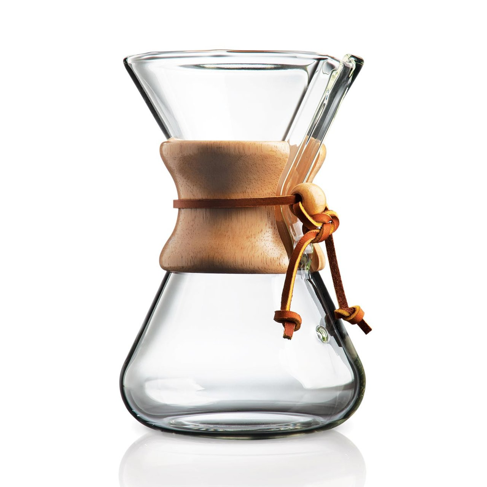

Chemex Brew Guide

- Weigh out coffee using a 16:1 water to coffee ratio and begin to preheat water to 203 ℉.
- After the water is preheated, prewet the brewer with the filter inserted to remove any papery taste and discard water.
- Place the brewer on the scale, put in your freshly ground coffee, and tare the scale to zero.
- Your first pour is called the bloom. Pour double the amount of coffee in water and allow the coffee to bloom for 45 seconds.
- Next, slowly pour the desired amount of water by the 3 minute mark and allow to drain. Begin the pour in the center and work outward in concentric circles followed by a center pour once the slurry is within a half inch of the top of the brewer.
- The total brew and drain time shouldbe around 5 and a half minutes.
- Lastly, pour and enjoy!